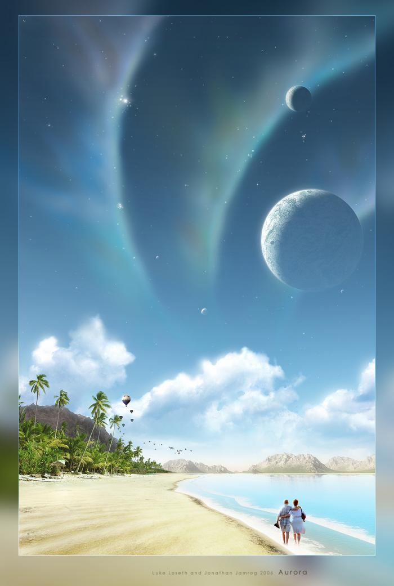

Влияние семи поколений предков на судьбы потомков
Уходя к праотцам, души усопших не исчезают бесследно, информационная и генетическая связь между ними и их потомками сохраняется. Большинство древних традиций признавало значимость влияния предков на потомков. Редко кому не приходилось слышать о печати либо проклятии рода, лежащем на семи поколениях какого-нибудь жуткого грешника. В греческой мифологии семь поколений Тантала расплачивались за грех детоубийства. Генеалогические исследования криминалиста Чезаре Ломброзо убедительно доказали, что у маньяков, насильников и жестоких убийц в роду прежде уже были преступники. Сейчас практически никто не сомневается в том, что таланты, способности и многие психологические качества передаются по наследству. Астрологи же убеждены, что потомки наследуют не только болезни, внешние признаки и таланты своих предков, но и во многих случаях саму судьбу, частенько расплачиваясь за грехи своих родителей, дедов и прадедов.
Совокупное влияние семи поколений предков в авестийской астрологической традиции получило название «геноскопа», который существенно отличается от индивидуального гороскопа, поскольку представляет собой некое клише жизненных ситуаций и событий, которые наверняка реализуются в жизни человека, если он не станет проявлять своих личных индивидуальных качеств, а будет просто «плыть по течению». Если же духовность побуждает человека к изменению к внесению в судьбу корректирующих и направляющих программ, реализаций которых в исключительных случаях способна полностью перекрыть влияние геноскопа, освободить человека от гнета кармического потенциала, накопленного его предками в течение семи поколений. Подобное редко, но случается, и лишь в тех случаях, когда человек проявляется как яркая харизматическая личность, проживает незабываемую жизнь и сам становится отцом многих детей - прародителем нового рода.
Гораздо чаще люди в той или иной степени становятся «жертвами» своих же пращуров и порой проживают не свою жизнь, а вариацию на тему геноскопа, своеобразное попурри из судеб своих предков. Есть несколько основных правил, определяющих действие геноскопа: 1. Отсутствие влияния гороскопа (когда на человека практически не действуют ритмы его собственной даты рождения); 2. Повторение судьбы предков, проявление наследственных болезней, психологических комплексов и проблем старшего поколения; 3. Повторение сигнатур предков (родинок, родимых пятен); 4. Совпадение даты рождения с датой рождения или смерти предков; 5. Рождение ребенка недоношенным (менее 7 месяцев) либо переношенным (10 месяцев); 6. Раннее появление зубов у ребенка; 7. Контакт с умершими предками посредством сновидений.
Если хотя бы несколько из вышеперечисленных правил будут иметь место в жизни человека, то можно с большой долей вероятности утверждать, что его индивидуальная судьба во многом будет зависеть от геноскопа - коллективной кармы предков. Такой человек бессознательно будет склоняться в направлении развития предков, оказывающих на него наибольшее влияние, проявить собственную индивидуальность ему будет непросто. В таком случае остается уповать лишь на самих предков, ведь человека могут незримо вести как лучшие представители рода, так и те предки, чье влияние может оказаться губительным для потомка. В данном случае все будет зависеть от значимости в его гороскопе одной из семи планет (видимых невооруженным глазом), поскольку каждое из семи поколений в геноскопе связано с определенной планетой.
Связь между судьбами предков и судьбой потомка как раз и определяется датой его рождения, поскольку астрологическое влияние планет весьма изменчиво. Чтобы определить, кто именно из 64 предков (а в семи поколениях их именно столько) будет оказывать наибольшее влияние на судьбу индивидуума, чьи гены возобладают в его характере, необходимо хорошо изучить гороскоп данного человека с целью выявления планеты - проводника влияния энергии Рода. Для этого необходимо знать, что в геноскопе первое поколение связано с Солнцем, второе - с Луной, третье - с Меркурием, четвертое - с Венерой, пятое - с Марсом, шестое - с Юпитером, а седьмое - с Сатурном.
Остановимся на этом моменте несколько подробнее:
Поколение №1 - это мы сами. Оно, конечно, связано с Солнцем - центром нашей планетарной системы, источником энергии и символом жизни. Ведь в отличие от холодных планет звезда по имени Солнце пребывает в постоянном термоядерном кипении, она словно «бурлит», выбрасывая в пространство мощнейшие протуберанцы и солнечный ветер, пронизывающий всю Солнечную систему. Одним словом, ним словом, Солнце живое, а значит, оно связано с поколением живых, и не просто живых, а молодых, чья кипучая энергия, желание блистать могут быть уподоблены Солнцу. Итак, все начинается лично с нас, являющихся первым поколением в семиступенчатой пирамиде геноскопа.
Поколение №2 - это наши родители, их двое, т.е. пара. Отцы и матери связаны со спутником Земли Луной, оказывающей огромное влияние на формирование эмоционального мира. Бессознательное, инстинктивное, рефлекторное проявление человека подчинено влиянию Луны, смене ее фаз и движению ночного светила по зодиакальному кругу. Все, что закладывается в детстве: привычки, непосредственное отношение к миру и адаптация в нем, эмоциональное восприятие - этим мы обязаны своим родителям. Некоторые люди, в гороскопах которых влияние Луны превалирует, и во взрослом возрасте остаются большими детьми - эмоциональными, обидчивыми и капризными. Наивность и инфантилизм, проявляющиеся в зрелые годы, - негативное следствие излишней любви и навязчивой опеки родителей. Второе поколение крайне важно для формирования личности, ее восприимчивости и адаптации в обществе. Если генетическая взаимосвязь между детьми и родителями нарушена, то человек, даже будучи талантливым, не сможет приспособиться к этому миру. Возможность беспрепятственного общения с родственными душами, умение находить правильные решения в окружающем мире впитываются если и не с молоком матери, то уж точно формируются в первые годы жизни под непосредственным влиянием родителей.
Поколение №3 - это наши бабушки и дедушки - 4 человека. С этим поколением связана планета Меркурий, в ведении которой находятся сферы общения, обучения, обмена информацией. От бабушек и дедушек люди перенимают интеллектуальные возможности, способности к восприятию, таланты, многие поведенческие особенности. Оказывается, через поколение передается более важная генетическая информация, нежели непосредственно от родителей. Если кто-либо из бабушек или дедушек занимался наукой, преподавательской деятельностью, литературой, то можно ожидать проявления таланта или научных способностей у внуков, но не у детей, ведь известно, что на детях гениев природа отдыхает.
Поколение № 4 - прадеды и прабабушки - 8 человек. Это поколение находится под небесным патронатом Венеры - планеты, большой цикл которой равен ровно 8 годам. Четвертое поколение считается срединным из семи поколений, а потому прадеды и прабабушки считаются хранителями гармонии и равновесия. С Венерой (четвертым поколением) связаны такие понятия, как любовь, радость жизни, привязанность к материальным благам. Считается, что материальные ценности, заработанные честным трудом или полученные по наследству, нужно укреплять и приумножать. Если предки 4-го поколения были богаты, то их потомку передастся умение зарабатывать, если же они грешили по материальной части, то этот грех будет лежать на продолжателях рода и не позволит им стать богатыми, как бы они того ни хотели.
Поколение №5 - прапрадеды и прапрабабушки - 16 человек. С пятымпоколением соотносится Марс, с которым связана сила воли, энергия, пассионарность, умение добиваться поставленной цели, побеждать. Марс - это импульс к действию. Без воли, энергии, страсти мы ничего не сможем добиться в жизни. Именно от поколения Марса потомкам передаются воинские качества, решительность, готовность к действию. Безволие, трусость или же жестокость, немотивированная агрессия могут быть продолжением греховности предков 5-го поколения.
Поколение № 6 – это деды наших прадедов. Этих предков - 32. Шестое поколение связано с Юпитером - планетой власти, авторитета, духовности и мировоззрения. Числом 32, каждый из них представлен как тотем или также символически представлен в виде одного из 32 зубов. Рано выпавшие зубы говорят о разрушении связи с этим поколением. Значит, не просто прервалась времен связующая нить, а прервалась связь настоящих поколений, историческая связь. По шестому поколению осуществляется незримая связь между человеком и национальным духовным (в том числе религиозным) эгрегором. В предках шестого поколения заключены огромные коллективные (эгрегориальные) силы, они могут стать для нас связующими звеньями в цепочке передачи традиций, заповедей, истинных знаний и учений.
Поколение № 7 - это прадеды наших прадедов. Всего 64 человека. Самое отдалённое от нас во времени поколение - связано с наиболее удаленной от Земли планетой - Сатурном. Так же, как незримыми для человеческого глаза остаются Уран, Нептун, Плутон и другие небесные тела, так же практически неразличимо влияние на человека предков 8-го, 9-го и 10-го поколений. Знать что-либо о жизни предков, живших более 200 лет назад, могут лишь потомки знатных родов, коих, конечно же, совсем немного. Эта связь указывает на проблемы седьмого поколения, по ним можно увидеть предопределение, настоящий рок, фатум, предназначение, внутренний закон и истинный долг человека. Это самое серьёзное поколение.
Итак, 7 поколений ( 64 человек) следующим образом влияют на нашу жизнь:
1-е поколение – это мы сами, наше «Я», Эго, как точка отсчёта. Связано с энергией Солнца.
2-е поколение – родители (двое, т.е. пара). Связано с энергией Луны. Именно они формируют наше ближайшее окружение, эмоциональное отношение к миру, потенциал здоровья. Это также и возможность дальнейшей адаптации, способность найти своё место в жизни. Особенно сильно влияет на людей с сильно выраженной Луной.
3-е поколение – бабушки и дедушки (4 человека). Они передают нам способности к восприятию, интеллектуальные возможности, таланты, а также коммуникабельность, умение общаться.
4-е поколение – прадедушки и прабабушки (8 человек). Они формируют в нашей судьбе любовные сценарии, умение жить в гармонии, а также уровень материального благополучия.
5-е поколение – прапрадедушки и прапрабабушки (16 человек). Наделяет нас пассионарностью, волей, стремлением и умением побеждать. Обратная сторона медали — агрессивность.
6-е поколение – деды наших прадедов (32 человека). Отражает в нашей судьбе связь с традициями, учениями, принципами, которых мы придерживаемся в жизни. Также оно дарует и социальное возвышение.
7-е поколение – прадеды наших прадедов (64 человека). Именно это поколение указывает на рок, фатум, предназначение в нашей судьбе.

Интересный факт: внешнее сходство с родителями - если ребенок похож на отца, значит, он имеет более жесткую генетическую связь с предками, а если больше похож на мать, значит, от многих проблем рода он свободен, более независим в своем выборе.
Знать своё родовое древо нужно не просто для истории, а для того, чтобы лучше ориентироваться и в настоящем, и в настоящем, и в будущем, которое является прямым отражением и продолжением прошлого.
Ведать о предках как можно больше - задача каждого человека, желающего избрать свой собственный жизненный путь. Заслуги благих предков могут стать прекрасным примером для выбора правильного развития личности, в то время как знание нерешённых проблем и грехов не самых лучших представителей родового древа помогут избежать повторения их ошибок и усугубления негативной кармы всего Рода.
Подготовила: Е.Г. Панькова (Культурно-Просветительский Общественный Фонд Алтайского края «Наследие Родовых Истоков»).
Литература: Глоба П. Зодиакальный прогноз на 2009 год. – М.: Яуза, Эксмо, 2008. – 1996 с.